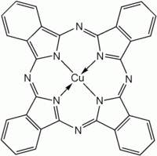
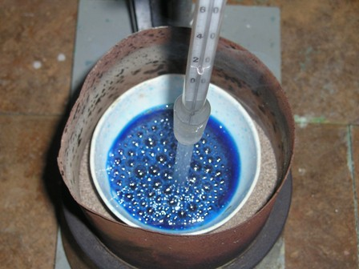
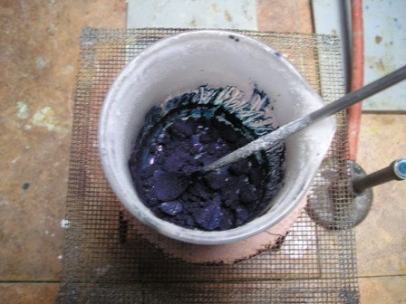
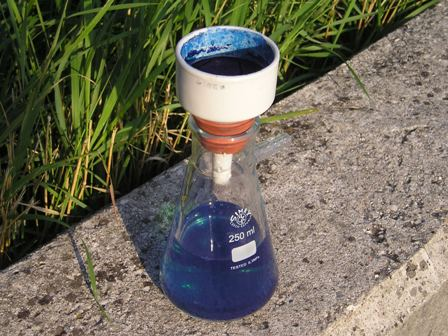
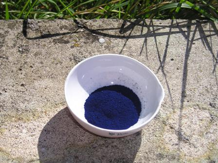

Un pigmento usato per la sua elevatissima stabilità (resiste agli acidi, alle basi, ai solventi, alla luce... a tutto!), non tossico, non inquinante, con in sovrappiù una gran bella molecola da vedere, è la Cuproftalocianina.
Ho provato la sua sintesi con una procedura che avevo in archivio e direi che val la pena di provare! Prima di por mano alla vetreria, guarda intanto che bella molecola!

Materiale occorrente
- anidride falica
- urea NH2-CO-NH2
- rame cloruro CuCl2.2H2O
- ammonio moibdato (NH4)2MoO4
- vetreria opportuna
- Macinare finemente 28 g di urea, 5 g di anidride ftalica e 1,2 g di CuCl2.2H2O; aggiungere circa 50 mg (una puntina di spatola) di molibdato ammonico (NH4)2MoO4 come catalizzatore e mescolare. Porre la miscela in un becher (o ancora meglio in una capsula di porcellana molto grande) e riscaldare per 2-3 ore a bagno d’olio o sabbia, tenendo la temperatura a 180° e mescolando spesso, magari con il bulbo di un termometro (attenzione, non sarebbe la modalità corretta!).

La miscela, all'inizio verde, fonde e e schiumeggia e si mantiene a circa 130°, diventando improvvisamente di colore blù; successivamente lo schiumeggiamento aumenta (aumentando molto il volume, attenzione alle fuoriuscite dal recipiente), la T° sale fino ai 180° ed il liquido si trasforma in una pastella violacea densa e appiccicosa, difficile da mescolare.

Questa fase è fastidiosa perchè bisogna continuare a mescolare (almeno ogni pochi minuti!) quindi occorre armarsi di pazienza ed aver qualcosa da fare nelle immediate vicinanze.Ad un certo punto la massa si rapprende e diventa quasi solida, allora ho interrotto il mescolamento ed il riscaldamento.

Dopo raffreddamento, alla massa (viola con riflessi metallici) si aggiungono 150 ml di HCl al 10%, si rompono bene i grumi e si fa bollire per qualche minuto, si fa raffreddare e si filtra alla pompa.Si disperde il precipitato in 100 ml di NaOH diluito e si rifiltra.
Dopo la seconda filtrazione si fa bollire nuovamente con HCl diluito come nella prima fase, si rifiltra e il precipitato si lava bene con acqua e si secca all'aria.

La mia resa è stata di 3,6 g (se ne perde un po' nelle varie operazioni).
La Cuproftalocianina si presenta come una polvere di un bel blù-violaceo profondo; è del tutto insolubile in acqua ma in essa vi si disperde facilmente come fosse solubile, con colore blù o azzurro se molto diluita.
La Cuproftalocianina è un pigmento di grandissimo potere colorante e si attacca tenacemente a tutto quello con cui viene in contatto, perfino il vetro dei becker.
Ftalocianine laser-sensibili vengono usate come materiale sensibile nei CD/DVD perchè devono garantire stabilità per molti anni.
Clorurando profondamente la molecola (in totale 16 atomi di cloro negli anelli benzenici della nolecola) si ottiene il Verde ftalocianina, mentre altre ftalocianine si ottengono sostituendo il rame con altri metalli di transizione.
Ho provato a sporcare una pezzuola di cotone per simulare una macchia su un vestito: nessunissimo modo di tirarla via, se ne ride di qualsiasi solvente e con la candeggina (pura, non diluita!) non fa neanche una piega...
Unico "smacchiatore" possibile? Le forbici!
2 commenti